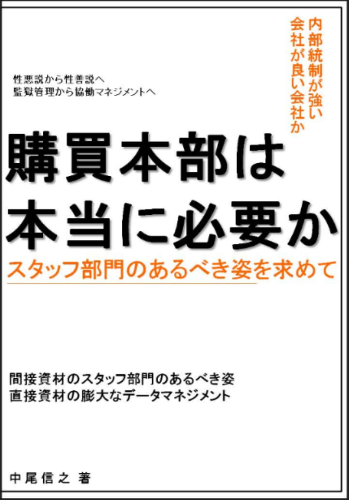
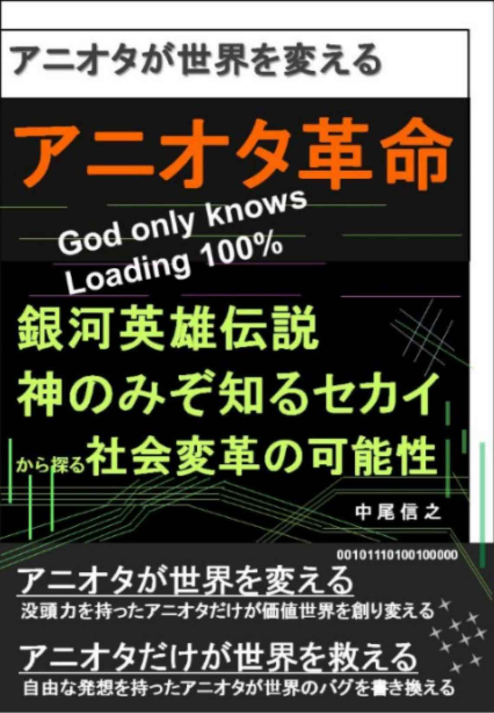
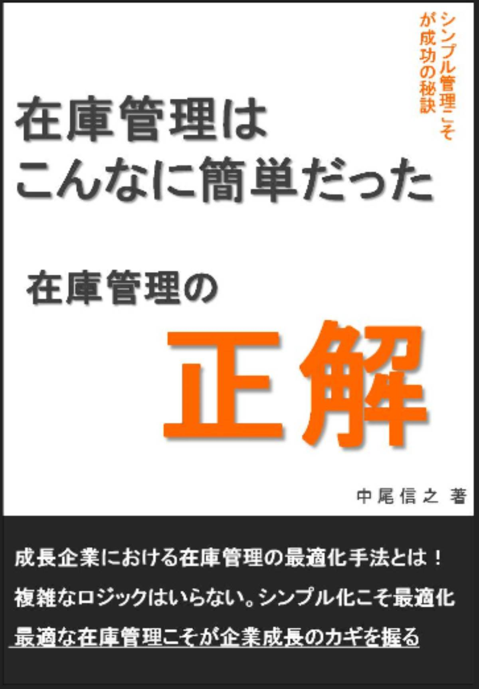

| あなたの世界を変える読書３ あなたの世界を変える１０冊の名著 あなたの世界を変える読書 あなたの世界を変える１０冊の名著 | |
| 中尾信之 | |
| (2018) | |
あなたの世界を変える読書３
あなたの世界を変える１０冊の名著
□はじめに
・読書によって世界を変える実装
□第一章 生き方のヒントをくれる本
１．１００％の結果を引き寄せる１％のアクション 鈴木領一
２．昆虫採集の魅力 川村俊一
３．病気は才能 おのころ心平
□第二章 世界のとらえ方を変える本
４．宗教の秘 密 : 世界を意のままに操るカラクリの正体 苫米地英人
５．マクドナルド化する世界経済 ベンジャミンフルフォード
６．帝国主義論 ( 光文社古典新訳文 庫) レーニン 角田安正（訳）
７．地球温暖化でウソをつくメディアと政府のトリック、
警察発表のトリックと、それをたれ流す新聞、テレビ 武田邦彦
□第三章 科学によって見方を変える本
８．３日食べなきゃ、７割治る 船瀬俊介
９．やってみました。１日１食 船瀬俊介
１０．植物という不思議な生き方 蓮実香祐
□おわりに
・ 常識の世界を超えて
あなたの世界を変える読書３
あなたの世界を変える１０冊の名著
□はじめに
・読書によって世界を変える実装
本書は、すぐれた読書をすることで、今までよりも高次元の認識能力を身に着けて、私たちの世界を変えることを目的にしているものである。言い換えれば、自分たちの世界の認識の仕方を変えてしまい、そのことによって、自分たちの行動変革を促していくこと、そして、それによって個々人が、自分だけの幸せを手にしていく生き方ができるようにすることが最大の目的だと考えている。
このシリーズは、本書をもってシリーズ第３弾となったが、キンドルアンリミテッドの読み放題の本の中から、おススメの本を紹介するという方法論については、第一弾からまったく変えていないので、月間９８０円のコストで、認識世界を変えるというのが主旨である。
私自身は２０１８年の３月になって電子書籍を公開し始めて、すでに英訳版も含めれば２０冊をリリースしたことになる。最初の一か月で、自分が出そうと思っていた書籍数を大きく上回ったように、やはり今もそのスピードは自分の予想を上回りおとろえていない。そして、また自分の生活にも変化が出始めている。組織に所属しない生活を続けていたが、組織に正式には所属しないままで、新たな活動をすることができるようにもなった。これは転職ということと少しニュアンスは異なるが、そのようなことに繋がった際に、私が最初に公開した書籍である「自分を生きる天職（転職）のすすめ ～１００％実力を表現する面接法～」に記載したことの正しさを、再び自分で証明できたとも感じた。
生き方についての考え方という点と、対面する相手に実力を１００％伝えるという点の両方について正しかったということを再認識したのである。そして、また第一弾、第二弾では、健康に関する本も、ピックアップしてきたが、今回も、いくつか健康や病気に対する考え方の本をピックアップしている。なぜならば、世界を変えて、行動を変えていくためには、自分の心のレベルを上げていくことも大切であるが、その際に、健康である状態を、自分の意志で作っていくことが前提となるからである。私は、歯の掃除以外、もう何カ月も医者にかかっていないし、薬も飲んでいない。それは多読を続けるようになった結果である。そして最近は、自分のエネルギーの消費状態を変えていけるように食事についての考え方も少しずつ変えてきている。このことについては、第三章の本で少し詳しくふれたいと思っている。
シリーズ第二弾では、「没頭力」ということが、ひとつのテーマになり、それを磨くことの重要性などを紹介した。また、同時に自分の世界を生きるために、現在の最大の宗教である「お金教」の支配から脱出するメンタリティの持ち方についてもふれた。その考えを推し進めていくと、「ライフハックならぬ秘伝忍法 充実世界の住民になるための思考」という最近公開した本の内容にもつながっていくが、今回、紹介する１０冊についても、その１冊、１冊の魅力のみならず、この１０冊をひとつの知識体系として、知識の集合体として自分のインストールすることで、自分なりの世界の認識能力を身に着けることができると考えている。
そうすることで、自然と、自分の考え方のフレーム（ブリーフシステム）が、今までとは違ったものになり、新たな思考形態を獲得し、新たな行動形態を持った、今までとは違うあなたになれると信じている。そして、そのアップデートは一度ではなく、常時、自分で素晴らしい本に出会うことで、アップデートし続けるということが大切なのであると思う。
あなたや、私が、日々のすぐれた読書によって、より高次元な人間にアップデートされていくことが、自分のためにも、社会のためにも必要なのだと思われる。第三弾である本書は、その世界を変える認識法について、実際に、認識方法を変えていくことから、行動を変えていく、その実装段階に入って行く段階になっていることを想定している。
私が、本シリーズで紹介した時点では、読み放題対象だった書籍が、その後、読み放題ではなくなっているものも出てきていますが、その点はご容赦を頂きたく思っています。そのような書籍については、私の推薦文を読むことで要点部分をご理解頂くか、興味を持たれた場合は、ご購入頂くか、その作者の他の読み放題書籍を手にとって頂ければと考えています。その点、ご了承頂きたく、よろしくお願いいたします。
□第一章 生き方のヒントをくれる本
１．１００％の結果を引き寄せる１％のアクション 鈴木領一
この本は非常にコンパクトにまとまった読みやすい本である。余計なことが書かれておらず、文章も非常に読みやすく、要点が分かりやすく伝わってくる。世界の認識の仕方を変えることについて理解がしやすいのは、もちろん、普通の引き寄せの法則とは一線を画す大切な内容が書かれている。第一弾で紹介した、「人生ドラクエ化マニュアル」を執筆したＪＵＮＺＯさんも、受動的な引き寄せの法則について批判をしている。考え方の変化という部分は、一般的な常識という考え方のフレームにいつも無意識に沿うことは楽であるが、それが思考停止につながっているため、そこを脱することが推奨されている。
この本で特に私が大切と思ったところは、 「１％のアクションを重視」 するということである。１％でもいいからアクションをすれば、自分が考えていること自体にも良い影響があるという。その１％の行動によって、自分の考えが後押しされるということである。これが、鈴木さんの言う、 「行動によって動機が強まる」 ということである。
考え方の変化→１％のアクション→考え方の強化→さらなる考え方の強化
というふうに、ちょっとした行動変革が、認識変化をさらに促し、そしてさらなる行動変化に繋がっていくというプラスのスパイラルがまわっていくということになる。ここで嬉しいのは、１％だけでも行動すれば良いということである。行動は大きく変えていくに越したことはないのかもしれない。しかし、やはり最初はなかなか難しいし、それに誰もが新しい考え方を獲得するのが難しいと思っているうえに、誰もが、そこから少しでも行動を変えるのが難しいと考えている世界では、たった１％、ほんの少しでも行動を変えるという領域に入ってしまえば、すぐに他の人とは違った領域に到達できるということであると思われる。
そもそも、読書をしている人が多くないし、多読をしている人はもっと少ないという事実が、人が考え方や、行動の変革をすることを、そう簡単にはしないということを証明しているようでもある。
少しのアクションを積み重ねること、この少しの勇気が、私にも、あなたにも、大きな一歩になるのではないかと考えている。これが、 「ゼロとイチの臨界点」 ということなのかもしれない。この小さな一歩をすることが、その先の自分の望むことへの最短の方策ということであると言える。
２．昆虫採集の魅力 川村俊一
この本は、まさに没頭力を持った人間の生き方が分かる書籍である。すぐれた専門性を持った人は、ひとつのことを○○バカと呼ばれるほど本当に好きで、そのことばかり考えている人が多いと思う。たとえば、植物の研究者の方は、そのことばかり考えていて、いろいろな研究に打ち込んだり、自然の中に分け入っているのだと思う。「地球２００周！ ふしぎ植物探検記」という山口進さんが書かれた本でも、そのような研究者の方の生き方を垣間見ることができた。森山徹さんという方の「ダンゴムシに心はあるのか 新しい心の科学」という本や、佐藤克文さんという方が書かれた「ペンギンもクジラも秒速２メートルで泳ぐ～ハイテク海洋動物学への招待～」という本でも、研究者の方の生き方がかいまみえる。
研究者の方というのは、研究職という一種の独特の職業を得ることで生きる糧を得ているので、そのことは素晴らしいし、羨ましいともいえるが、その席数が少ないことを考えると、同じ方向を目指している人が、研究職以外の生き方があることを知るのもひとつの希望であるように思う。
この「昆虫採集の魅力」は、蝶が好きで、好きで、たまらない著者が、どのような生き方をしているか、どんな考え方をしているかということが分かる面白い本である。私も小さいころ、それほど詳しいわけではなかったのに、小学校で「虫博士」と勝手に先生に呼ばれたりしていたこともあったし、知識の量ではなく、ザリガニやウナギを捕まえる技術の面では、誰にも負けない自信があった。今でも、公園で子供たちがザリガニ釣りをしたり、網でザリガニを取っていると、その中に混じって、素手でザリガニを捕まえて彼らに協力をしている。
私は幼い頃から、ムツゴロウさんこと、小説家で、動物王国を主催されている畑正憲さんに強く憧れていた。私が小学校の頃から、ムツゴロウさんはおじいさんに見えたが、実際は１９３５年の生まれで、２０１８年現在、８３歳であるから、私の祖母よりも１０歳ほど、まだお若い方である。最盛期のムツゴロウさんほど、メディアに露出しなくても、最盛期ほど猛烈なスピードで執筆をしなくても、好きなことを突き詰めて、それを楽しみながら仕事にしている人は世の中に少なからず、いるということが分かる。著者は昆虫商という蝶の標本を仕入れて売ったり、標本を作ったりする職業になるようであるが、本の中にはテレビチャンピオンで初代昆虫王になった人の話も出てくる。私も熱帯魚のディスカスで、いろいろな種類を作っているブリーダーの存在は幼いころから知っていたが、蝶についても、人工的に違う種類をかけあわすことをされている人がいることを、この本で初めて知った。
また著者自身も未開の地に分け入り自身で蝶を採集してまわった遍歴を持っておられる。亜熱帯地域で、いろいろな苦労をしながら、蝶を追い求める。なかなか帰国せずに死んだと思われたりするほど、蝶集めに熱中する。大学生の間にも、未調査の土地とされるところにいったりと、卒業してからも、すぐに危険な地とされるような場所に行ったりと、とにかく行動力がすごいのである。蝶はそれだけ魅力があるものなのだ。現在でも、そのような生き方をしてきた人がいるのである。本当に人は、自分が選べば、好きな道を生きられるということを、この著者や、彼の仲間の昆虫商の方々、採集家方々の生き方は証明していると言える。
蝶のことなら、何時間でも話せるのに、プライベートのことになると寡黙になる人が多いという昆虫商の生態なども面白い。
３．病気は才能 おのころ心平
第三章で健康を保つために重要な考え方を獲得するための本を２冊紹介するが、ここでは、病気というもののとらえ方についての本を紹介したいと思っている。心と体は、つながっていて、お互いに影響を与え合っているものであるから、私たちの健康や、病気についての考え方自体が、自分たちの健康について影響を与えるということであると考えられる。心と体の関係について考えること、健康ということをどのように考えるかということが、すなわち自分の命や、生活について、どう考えていくかということに繋がっているということでもあると思う。
この本の著者によれば、「病気は才能であり進化の過程である。マインドをかえバランスをとれば病気はなおる。病気は進化の前兆」ということである。「あなたの世界を変える読書」第一弾で、村上和雄さんの「生命の暗号」という本を紹介し、「６０兆の細胞と３０億の遺伝情報のほとんどは眠っているがオンにするだけで奇跡を起こせる」ことを解説していたが、病気という症状そのものだけに捕らわれるのではなく、自身の細胞と遺伝子の力を最大限発揮し、「病気治って良し」という許可を自分の心がだせば、体も改善していくという法則が紹介されている。
このような考え方は、非常に強いストレスを受けた人が、心（脳）の一部に物理的な傷をおい、そこと関係する体の一部が傷を負うという科学的なプロセスと同じである。傷をおったプロセスと同じように、心（脳）の認識の部分を治すことで、物理的に体がおった傷をいやすことが可能であるということである。
これは科学的ではないことではなく、普通に考えると、治すことができないと思われた病気が治ることがある理由が、このようなところにもあるのである。ここにも、普通の常識だけでは理解できないが、深い科学では理解できることがあるということである。まさに、「病気というものの考え方の意識改革」なのである。
季節の変わり目などに、体調が不安定になったり、私も肌荒れになったりするが、これも体が環境に適応していくために、自然にバランスを取ってくれているのであり、出てきた肌荒れの症状を憎むというよりも、環境に適応するために頑張ってくれているのだなと考えたり、そのうえで、「治って良し」の意思を持つことが大切だと思えるようになった。
本書によれば、体は比較的、強い部分が、このような不調を引き受けてくれているのだという。そのように考えると、症状だけを悪者扱いするのではなく、治るように、きちんとケアしたり、排毒したりという自分の行為を変える方に、意識を向けることも考えられるのだと思う。
□第二章 世界のとらえ方を変える本
４．宗教の秘 密 : 世界を意のままに操るカラクリの正体
苫米地英人
苫米地さんの機能脳科学の専門家であるが、脳の研究をするにあわせて宗教の研究や、実際の修行のようなこともされている。またオーム真理教の事件の際は警察に協力して脱洗脳を実践するなど、知識と実践経験の双方を兼ね備えた方である。宗教に関する本も多く執筆している。
この本の冒頭では、マザーテレサがなくなる前に「神がいないのではないか」ということを考えて思い悩んでいたことが紹介されている。カトリックにおいては、そもそも女性は神父さんになれない。まるで土俵に女性があがれないというようなものである。どれだけ人望があり、人々に奉仕し、多くの方に慕われる優れた方でも、そこらへんにいる神父さんより格下に扱う、それがカトリックの世界なのである。
人を平等に扱うのが、キリストの教えなのではないかと私などは思ってしまう。キリストが神の無償の愛を説いたのに対して、キリスト教は、神との契約という行為を必要とする。信じるものしか救わない思想に置き換えられているのである。
苫米地さんが指摘しているのは、宗教が組織化、形式化する中で、最初の開祖の考えから大きく離れた別物になっていることを指摘している。この本では、キリスト教が、キリストの手から離れて、直弟子の手に渡り、そこから当初はキリスト教を弾圧していたパウロに渡り、そしてローマ帝国の為政者や、キリスト教の組織に移っていく間に、変性していった過程を理解することができる。
また他の書籍では、釈迦がもともと差別を生む思想につながるバラモン教の輪廻転生を否定して自身の教えを広めていったにも関わらず、日本の仏教は、輪廻転生の概念を持ち、釈迦が否定したお葬式でお金もうけをしている。文化として冠婚葬祭をすることは良いが、生と死についての考え方をお金や恐怖で支配するのはいただけないことである。
町で、聖書を配っている人や、キリスト教の教えを広めようとしている人たちは、非常に穏やかな、落ち着いた雰囲気をしている。それと同時に、機械的な印象も多少受ける。なぜならば、宗教という思想商品に依存できている反面、自分で考え、自分で悩み、自分の世界観を構築することをしていないからであると思う。
苫米地さんの、この本の素晴らしいところは、宗教というものの本質を分析して伝えると同時に、今は、誰もが「お金教」に支配されがちだということを指摘している点である。私たちは実生活上、お金を交換の手段として使うことは現状、避けられないが、しかしそれを絶対として、宗教のように知らないうちに信奉しすぎてしまうことは、自分の幸せを見失うことに繋がるように思われる。だからこそ、冷静な目で、宗教の論理を見つめ、お金今日の論理を見つめて、そのうえで世界の認識をしていくことが大切だと私も考えている。
５．マクドナルド化する世界経済 ベンジャミンフルフォード
自然農法を提唱されていた故、福岡正信さんの本について少しだけ、前のシリーズでもふれた。しかし、福岡さんの本は、キンドルアンリミテッド対象ではないので、ここではメインの本としては紹介できないが、福岡さんの本に書いている内容を知ったうえで、ベンジャミンフルフォードの本を読むと、深く理解できる部分があった。
福岡さんの本で、アメリカの農業を見学された際、規模が大きな農業をしているのに、彼らはいくら売上があっても、利益が出ておらず、農民は非常に貧しい生活をしていることが書かれていた。そして、それと似たような状態に日本の通常の農業が置かれている状態に近いように思われる。
マクドナルドのような巨大な資本が、簡易な食べ物をすぐに食べられるシステムを作り、それを消費者に提供していることは、それなりに現代社会に対して、役割を果たしていると言える。初めて行く土地で、何を食べようか迷った際に、マクドナルドや、ハングリージャックがあれば、そのブランドネームに安心して、そこに足がむいたりする。
店舗や輸送の効率的な運営は、経済システムという意味でも、無駄を減らしたりすることで、資源の無駄も減らし、社会の役にたっている面もあるように私にも思える。ところが、そういう側面だけではない面があることを フルフォードさんが指摘している。
自然の中には多様性というものが非常に重要なエッセンスなのである。しかし、大資本の行う大きな商売を支えるためには、単一的な生産物を、徹底的に人為的に管理することが必要になってくる。そういうところでは、農業をする人が鋭意工夫をしながら、作物を育てるというよりも、単純な作業をする工夫のような人だけが求められるようになる。だからこそ、そこには付加価値を出す必要がなく、単純工だけが求められるというのだ。工場の中では、それで良いかもしれないが、オープンな環境の中で、野菜を作る際に、単一の植物ばかりを何年も、多くの農薬を作り続けることで、土地が疲弊していくとも言われる。
農業をしているというより、農業機械に使われている奴隷のように働いているというのである。これは工場で働いている工夫と同じようなイメージである。農業機械だけではなく、必要以上の農薬をまくことによって、見た目は綺麗かもしれないが、栄養や味がない野菜を作っている。それだけではなく、農薬を体に蓄積してしまうということになってしまうのである。
「昆虫採集の魅力」という本でも、自分で蝶を繁殖させている方が、普通に買える野菜を蝶の幼虫にあたえると、黒くなって死んでしまうことを紹介している。良く洗えばよいというものではなく、根から農薬を吸収させているため、洗うだけではどうにもならないというのである。より、複雑な構造になっている人間は、すぐには影響がでないが、排毒を上手くできていないと、なんらかの影響を受ける可能性があるともいわれる。
福岡さんも自然農法を始める前に、農業試験場で働かれていたため、その時の経験も踏まえて農薬の効果について指摘をしている。農薬の試験においては、いろいろなパラメーターを一定にしたうえで、ひとつの農薬の試験を行い、結果が出たか出なかったかということを、限られた情報で確認する。たまたま、ある実験で効果がでても、実際に、オープンスペースの環境で、この農薬を利用すると、さまざまな要素の影響の複合的な結果として、試験場で得た結果ほど、増産にはつながらないのである。だから、農薬を減らしても、収穫が減る量は、農薬を減らした量とは、比例しないと言われている。
福岡正信さんの書籍紹介
「自然農法 わら一本の革命」「自然を生きる」「無の哲学ⅠからⅢ」
６．帝国主義論 ( 光文社古典新訳文 庫) レーニン 角田安正（訳）
シリーズ第２弾では、「社会主義の誤解を解く」という本を紹介した。その時、資本主義も社会主義も純粋な形では存在せず、それらが融合して、修正資本主義という形で、バランスを取りながら、現在の社会は成り立っていることを書いた。それでは帝国主義とは何なのかというと、欧米列強が、経済体制としては資本主義を取りながら、そして社会政策もしているので、修正資本主義体制をとりながら、強い経済と強い軍隊を持っていることを背景にして、他の国の民や他の国を支配していこうとすることである。
君主がいようがいまいが、民主主義をしているということを誇りにしているヨーロッパ諸国や、アメリカが、戦争によって、他国を侵略して、その侵略の上に、自国の一部の強力な資本家に有利な経済体制を作っていくということである。事実、紳士の国イギリスは、自分たちが売るものがないにもかかわらず、中国にはアヘンを買わせて、中国からお茶などを持ち去っていったのである。このことは次に紹介する「米中論」にも紹介されていることである。私に言わせれば、どこが紳士の国なのか、文化の国なのかと思う。そして彼らと同じように競い合って他国に侵略して行ったのが、富国強兵を合言葉に、市民の富を、国という箱ものに集中して、帝国主義にひた走った日本である。その道を突き進むようにしていった明治維新というものが素晴らしいものだったわけはないのである。
帝国主義は、民主主義と、資本主義の中から生まれている。良いイメージがある民主主義と、良いイメージがある資本主義。この両方が、悪いイメージの帝国主義と相反せずに、同時に存在しえるのである。これは恐ろしいことである。
そして、この帝国主義は、強い国が弱い国、強い国の人が弱い国の人を支配する、富を吸い上げるということだけを意味しない。それに加えて、強い国の中で、圧倒的に強い資本家が、圧倒的に多数の、しかし弱い労働者から、富をしぼりとっていく体制であるということなのだ。資本の極度の集中は第二次大戦後に起こったのではなく、すでにレーニンの「帝国主義論」に、いくつもの産業について、事細かに書かれているように、すでに第一次大戦よりも、ずっと前から急激な集中が進んでいたのである。資本の集中は、効率化のためには必要であるが、圧倒的な力の差を生むという点では、過度の集中は健全さを阻害する。権力が集中しすぎることが良くないのは、民主主義下でも、社会主義下でも同じである。
帝国主義と、資本主義はまことに相性がいいのは、この圧倒的な資本家と、そこに使われる労働者の大きな力の差を生むという点である。それでは、民主主義という、民が決める権利を持っているのに、どうしてこれが機能しないのかということが問題になる。
その問題に、真剣に考えたのが私の書いた「アニオタ革命 アニオタが世界を変える 銀河英雄伝説 神のみぞ知るセカイ から探る社会変革の可能性」という本である。しかして、労働者や、市民は多数であっても、全員が覚醒して、正しい知見を持つことは不可能に近い。そして、そうしないように、体制を組み、思考のコントロールが、常識という形でなされている。また、圧倒的な資本家側は、富と情報をコントロールして、市民が考えないようにしているのである。
いずれにしても、１９１６年に執筆され、１９１７年に出版されたこの本が、１００年以上前に指摘している状態は、今も続いているということを理解したうえで、自分たちはお金というものとの距離を考えていきたいものである。
７．地球温暖化でウソをつくメディアと政府のトリック、
警察発表のトリックと、それをたれ流す新聞、テレビ
武田邦彦
武田さんは、明石家さんまさんのテレビ番組に出るなどメディアでの露出が多い方であるが、テレビ番組では、重要なことを省いて、武田さんの考えが面白おかしく、単なる奇抜な意見のように取り扱われていることがある。しかし、地上波ではない、水道橋博士と、宮崎哲弥さんの番組、「博士も知らないニッポンのウラ」では、じっくりと武田さんの考えを説明してくれている。ここで紹介する書籍でも、先生の主張を明確な数字とともに理解することができる。
例えば、温暖化で氷が解けると言われているが、仮に温暖化した場合でも、北極の氷は溶けてもアルキメデスの原理で、水位には影響がない。そして、南極の氷は温度が数度上がった場合でもマイナス４８度くらいの温度になり、逆に蒸発した水が氷ることで氷が増えるというのである。
このような予測が、正式に世界的なＩＰＣＣ（気候変動に関する政府間パネル）で発表されても、それらを国の環境省などの機関や、環境保護団体はアナウンスしていないのである。自分たちの組織の利益のためになるように、断片的な情報しか流していないのである。ゴア元副大統領などは、嘘の数字を出して世界的に恐怖をあおり、環境利権を作ろうとしたにすぎない。二酸化炭素の排出権取引も、お金で排出する権利を取引するだけで、排出量は減らないのである。この排出利権を苫米地英人さんも、古くから欧米の仕掛ける利権であることを指摘している。適当なゴア元副大当郎は６メートルの推移上昇と言っていたが、ＩＰＣＣは１０年で３センチと予測しており、大きな乖離がある。
ごみ問題も同じである。私たちは、まったく正しい情報を持っていない。ペットボトルの分別収集をするにしたがって、ペットボトルのリサイクル量は増えないまま、生産量だけが増えているのである。このことを、予測していた環境運動家は、分別収集の開始前に、分別収集に、強く反対だったのだという。しかしリサイクル量は増えないまま、毎年、何千億円もが無駄に利用されているのである。
現状のリサイクル技術では、分別をすればするだけ、余計なエネルギーが必要になるというのである。ペットボトルを分別して収集しても、それらをリサイクルできる量は増えておらず、ほとんど燃やされているというのだ。
リサイクルされず燃やされているだけであるのに、分別収集のルートに乗ったものは、リサイクルしたとしてカウントしているルールがある。 実際のリサイクル率と、本当のリサイクル率は、何倍もごまかしているのである。こんなバカなことがあるだろうか。経済産業省や環境省はうそつきの集まりと言われても仕方がない。
欧州のルールでは、燃やしたものはリサイクル率に含めないという明確なルールがある。ただし欧州にしても、出ているリサイクル率は怪しいと武田さんは言う。燃やす場合は、本来なら他のゴミと一緒に燃やされる方が、エネルギー効率が良いというのである。分別してしまうことで、生ごみなどの燃焼率も落としてしまっていると指摘している。
温暖化と、リサイクル、このふたつだけをとっても、これだけ情報の正しい伝達がされていないのである。私たちの考えている常識というもの、良い行いと、悪い行いというものは、このように非常に脆弱な判断の上に成り立っている。武田さんの書籍を読むと同時に、水道橋博士の番組の映像もあわせて見て頂けたらと考えている。
□第三章 科学によって見方を変える本
シリーズ第二弾では、苫米地英人さんの本を二冊紹介した。本書では、渡瀬さんの本を二冊紹介したいと思っている。というより、この二冊はセットであるようにも思われるので、分けずに紹介したいと思う。
８．３日食べなきゃ、７割治る 船瀬俊介
９．やってみました。１日１食 船瀬俊介
そもそも、読書によって世界認識を変えて豊かに人生を歩むという考え方は、正しい情報を得て、生き方を変え、本当の豊かさを見つめる力を身に着けることによって成り立つ。ここにおいて、食べるということと健康を保つための医療という、この切っても切り離せないふたつのことについて、正しい認識を持つことは、非常に重要である。薬食同源（医食同源の元になった言葉）と中国では言われるように食べることと、健康を保つことは、同じことということである。
私たちが、高次元の認識能力を身に着けていくためには、必要な情報をインプットし、不必要な情報はインプットしないか、インプットした場合でも、心身に深く取り込まずに捨ててしまう必要がある。食べ物についても、これとまったく同じであると私は考えるようになった。高次元の認識能力を持った、優れた存在であるためには、不必要なものを食べすぎてはいけない。不必要なものを取り込んだ場合は、排毒して体を綺麗に保つことが有益である。このような考え方を、船瀬さんの２冊の本は分かりやすく教えてくれる。私はもともと、太りにくい体質で、いつも痩せていると思われている。しかし、ダイビングに行ったりした時に、水着になると、それなりに筋肉があることが分かるようである。２０年前から、ほとんどその体系を維持してきたが、１年ほど前には、そこから４キロほど体重が増えた時期があった。そして、ずっと維持してきたベスト体重の際に履いていたズボンが３本ほど履けなくなっていた。もともと自分でも痩せていると認識していたから、ベスト体重と思っていた基準が、少し移動しただけであると思っていた。しかし、いろいろな本を読んで、自分の食べる量を改めて見直し始めたところ、２０１８年になって、それらのズボンがはけるようになった。そして、夜食として食べていたものを、ほとんど食べることがなくなった。そしてベスト体重であるから、快適に過ごせている。
もともと、日本人は江戸時代まで１日２食だったと言われている。そして、「１日２食は自分のため、３食目は医者のため」とドイツでも格言があるように、また自分が開発したトースターが売れるように、エジソンが１日３食マーケティングを推進したと言われるように、医療業界や、家電メーカー、電力会社のために、私たちが必要以上の食べ物を自分にインプットする必要はないのである。カロリー栄養学も、フォイト栄養学も、現在の栄養に関する理論の前提になっている理論は大きく事実と乖離している。だからこそ、多くの人が健康を害しているのである。それらの理論が正しく、健康診断や医療の施術が本当に正しい賢知に基づいて、科学的になされていれば、ここまで医療費は膨らまないし、もっと人々は健康になっているはずである。
食べれば食べるだけ栄養素を取れるのではなく、余計な量を取れば取るだけ消化にエネルギーがかかり、余計な体力を消耗してしまうのである。私もベスト体重ではなかった時期には、なんとなく、いつもお腹がもたれているような感覚が少しだけあった。まだまだ、食べれるとか、美味しく食べれるということと、ちょうど体に良い量というのは、必ずしも一致しないし、食べすぎによって心が麻痺していれば、余計にその感覚が崩れていってしまうようである。だから、腹八分や、腹六分ということを意識して、お腹がすいたことを認識できる状態、生きていることを認識できる状態を幸せだと感じることが大切で、そのような時こそ、長寿遺伝子がスイッチオンになり、キラー細胞が活性化し、毎日、５０００個生成されるというがん細胞などが駆逐される状態を作って行けるということである。
このことは「貧乏子沢山」という言葉からも分かる。少し論点が異なるので、少し整理すると、子供を育てる余裕がない人が沢山子供を持つことは、あまり良いことではないようには思う。ただ、ここでこの言葉を持ち出したのは、粗食な食事をしていることが、健康な体を作るということなのだ。お金があるから、美味しいからといって、西洋の食文化におぼれてはいけないということである。高次元の認識力を持った、多読をしている私たちは、そのような次元の麻薬のような楽しさのみに拘泥することは、ほどほどにしたいということである。
そして、これらを無理して行うのではなく可能な範囲でやってみるのが良いようである。単純に、朝ご飯をぬくだけで、胃の中を１２時間以上、空けておくことができ、体の細胞たちをスイッチオンにすることができる。私が、自然に行ってきた、朝ご飯を食べない習慣は、理にかなっていたと、改めて思ったのである。だから、４１歳であるが、先日、海外に行った際も、みなが３５歳でしょと声をかけてくれた。
「やってみました。１日１食」の中でも、ほとんど青汁だけで活き活きと生きている方のことが紹介されているが、その方も飛行機の中で、機内食をいらないと断るようである。私も、行きの飛行機で、普段から朝食を取らないので、機内では、朝ご飯は断り、ジュースだけを頂いた。また、帰りの飛行機でも、乗る前に友人と軽い食事をしたために、それで十分であるから、おやつの時間に出てきた機内食の御飯には手をつけずに、アイスと果物だけ頂いた。
そのようにして、食べる量を自分で考えていくというのが、賢いやり方であると思う。私も残すのが勿体ないからと、他の人が残したものも食べるようなことを頻繁にしていた。しかし、残すのが勿体ないと言っても、不必要に取り込まれた食料は、どのみち体内で有効には取り込まれず、逆に体に負荷をかけるのであれば、食べることは避けた方が賢明なのである。食欲という次元の欲求にとらわれすぎず、適度な食料を取っている人こそ、頭もさえて、適切な行動をしていけるのである。
１０．植物という不思議な生き方 蓮実香祐
私は植物が好きなので、部屋の中で植物を育てたり、公園によく出かけたりしている。植物好きがこうじて、「新宿御苑 癒しの瞑想スポット ～都会のオアシス～」と「屋内植物園計画 小さなスペースで緑を楽しむ魔法」という植物に関する本も公開した。
今回紹介する「植物という不思議な生き方」という本と出会ったのは、去年の十一月のことであった。これから、どんどん寒くなっていくという時に読んだため、植物たちが季節をどのように超えていくのかということを、この本の知識と照らしながら楽しむことができた。この本は、植物だけではなく、植物と昆虫、動物たちの関係や、地球と植物の歴史などについても、分かりやすく説明してくれている。非常に読みやすいだけでなく、植物たちのことを擬人化して説明してくれているため、とても理解しやすい文章になっている。
もっとも心に残っているのは、タンポポについてである。冬が寒いエリアに住む植物にとっては、葉を枯らすということが効率的な仕組みであることが紹介されているが、タンポポやオオバコなどは冬の間も緑の葉を蓄えたまま冬を越す。この時、葉っぱを地面にぺたっと張り付けたような形態で、そして葉を重ならないように花のように配置して、効率よく光を吸収できるようにしている。エネルギーの消費が少ない冬に、効率よく光合成をしている。そして根は深くに張って栄養を吸収する。どうして冬の間も頑張って生きているかというと、春になってゼロから成長していくよりも、冬を成長した姿で乗り越えた場合、春が来た時に最初に花を咲かせることができ、虫たちを呼べるというのである。
このことを知ってからタンポポを見ると、本当に地面にぴたっと張り付いて、葉を綺麗に花のように配置しているのである。蓮実さんは、この姿を、地球を背負っているという表現をされている。今年の春先は、子供と一緒にタンポポの花を探したり、綿毛を飛ばしたりして遊んだ。最初は上手に綿毛を飛ばすことができなかった子供も、途中からは吹くことだけではなく、腕を振って飛ばしたりと、どんどん上達していった。
タンポポ以外にも、いろいろな視点で、植物の生き方、性質を説明してくれている。たとえば、植物と、アリの関係である。植物はアリに守ってもらうために、ミツをアリに分けることがあるが、ここに割って入るのがアブラムシである。アブラムシは植物よりも甘いミツをアリに分けることで、植物から追い払われないようにしているという。さらに、ここに別の生物が入ってきたりする。このあたりのことを分かりやすく説明をしてくれている。
「植物は逆立ちした人間である」とアリストテレスが言ったことが紹介されているが、この本を読むと、植物が人間より下位にある生き物というわけではなく、この地球を形作ってきた存在であり、恐竜を絶滅させた一因にもなり、そして、常に多様に進化し続けている存在であることが分かる。
植物の日々の行動（反応・作用）や、世代を経た進化（変化）にどのような意志や、意図的な戦略のようなものがあるのかは分からない。そこが私には不思議でたまらない。しかし、私は、この本が、植物を擬人化して表現していることが、とても自然なことであるように思えた。そして、私たちは植物の生き方に学ぶことがあると感じることができたのである。
□おわりに
・常識の世界を超えて
多読をすることで、高次元の認識能力を身につけていけば、世界を捉える認識が変わり、人は変わることができると私は信じている。これは、間違いのないことであると思う。そして、認識能力を高めるための本を、すでに、このシリーズ３回で３０冊紹介をしてきた。
以前のシリーズで、この中で紹介した本の内容が分からなくても、他の本との連携した知識形態を取り込むことで、少しずつ理解が深まっていくということを記した。人間の脳が、そのようなネットワークでできているのと同じことであると思う。ところが、今回紹介した船瀬さんの本にもあるように、人は、今まで見たり聞いたりしてきたこと、それまで真実だと思ってきたことを変えることは、なかなかに難しいことのようである。それが変化のための痛みなのか、単なる拒絶反応なのかは置いておくとして、新しい認識の仕方を受け入れられない人が多いということも事実である。
今までの狭い見方から覚醒する、目覚めるという感覚は、何か古い皮が、一気にはがれるような、世界にかかっているベールがはがれるような、気持ちの良いことであると私は思う。もしくは、見なくていいものを見てしまう、分かってしまうということでもあるかもしれない。それでも、その先にこそ、自分の自由と、幸せがあるということなのだ。
常識という考え方は、世の中の秩序というか、安定状態のためには、ある程度必要なことなのかもしれない。それがあるから、為政者は、その安定の上に、「望ましいと期待する行動」を人々に取ってもらい、そのうえにあぐらをかいていられるのである。それを仮に「良し」としても、そのような社会システムのことを理解したうえで、多読によって、より高次元の高みに上ろうとしているあなたには、その高みから、周りの世界の常識という習わしには、根拠がなく、誤っていることが多いことが簡単に見て取れるようになるはずである。
その時、周りの人のことは置いておくとしても、あなた自身は、それらの仮そめの常識にあわせず、自分が正しいと思うこと、自分が幸せだと感じられる行動をとることで、自分の幸せを自由に得て頂きたいと思うのである。他の人が、なにやら遠回りをしたり、たいへんなことを悲しい顔をしながら頑張っていても、高みから景色の見えるあなたは、そのような遠回りを冷静に無視して、最短ルートで、最適な道を楽しんでしまえばいいのである。
一般的な考えである常識を超えてしまうと、あなたは接する人を選ぶようになるはずである。なぜなら、ある程度、同じ高みに来ていない人には、常識の外の本当の世界が、ベールにかかっていて見えていないのだから、話があわなくなってしまうのである。変わること、知ることに強い抵抗を示す人には、思っていることを話すのが面倒になってくる。逆に、こちらが話したベールの向こうの話を、すんなりと受け入れる人には、こちらが知っている重要な考え方を、すらすらと話せることになる。これは、類は友を呼ぶということである。
すでに私たちには、少なくとも３０冊の知識体系がインプットされ、これらによって、私たちの認識力はかなりのアップグレードができていると言える。そして、このこと自体も、私たちは苦労しながらやっているのではなく、楽しいから良質な情報を取り込み、より高次元の認識能力を得ようとしているのだと思う。
読書によって、そして、それらの情報を自分なりにかみ砕き、自身の経験や、他の知と融合させることで、私たちは確実に、進化をしてくことができるのだと思う。
読書によってあなたの世界観がつくられ、
あなたの認識する世界は変えられる。
認識世界が変われば、あなたが変えられる。
そして、豊かな世界を生きられるようになる。
本書を手にして頂き、本当にありがとうございました。
中尾信之
□作品紹介

脳内ＯＳ ＦＯＲ ＨＵＭＡＮ ２０１９ ＶＥＲＳＩＯＮ
最新オペレーションシステムをインストールせよ！
https://www.amazon.co.jp/dp/B07N1T1TZF

自分を生きる天職（転職）のすすめ ～１００％実力を表現する面接法～
http://www.amazon.co.jp/dp/B07BD3K67Z

はじめてのチームマネジメント ワンチーム・ビルダーを目指して
https://www.amazon.co.jp/dp/ B07BJ98FTT

購買本部は本当に必要か スタッフ機能のあるべき姿を求めて
https://www.amazon.co.jp/dp/ B07BQ9BFDS

あなたの世界を変える読書 あなたの世界を変える１０冊の名著
https://www.amazon.co.jp/dp/ B07BT28HLV

あなたの世界を変える読書１１ あなたの世界を変える１０冊の名著
https://www.amazon.co.jp/dp/B07N4B2CXD

アニオタ革命 アニオタが世界を変える 銀河英雄伝説 神のみぞ知るセカイ から探る社会変革の可能性
https://www.amazon.co.jp/dp/B07CRQ3WWD

屋内植物園計画 小さなスペースで緑を楽しむ魔法
https://www.amazon.co.jp/dp/B07CWRK2CN

在庫管理の正解 在庫管理は、こんなに簡単だった
https://www.amazon.co.jp/dp/ B07GFS2YDN

新宿御苑の四季 写真集
Four seasons of Shinjuku Gyoen National Garden
https://www.amazon.co.jp/dp/ B07N83G4L5

吟遊物語集 吟遊詩人信